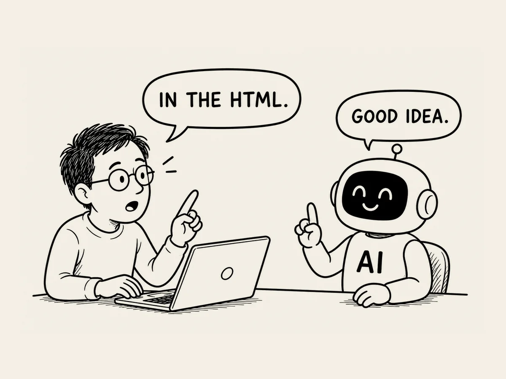

20.
Ich kann nicht glauben, dass ich sage: „Dann packen wir das ins HTML.“
Anscheinend sind Suchmaschinen
ausgeklügelter, als ich gedacht hatte.
Als die Website fast fertig war,
machte ich mir langsam Sorgen.
Ich fragte die KI:
„Was soll ich wegen SEO machen?“
Eigentlich hatte ich schon einmal gefragt,
was SEO überhaupt ist,
und die KI hatte es mir erklärt.
Aber so genau
konnte ich mich nicht mehr daran erinnern.
Dafür sorgen,
dass meine Website
in Suchmaschinen gut gefunden wird.
Ungefähr so viel
hatte ich verstanden.
Ich wollte die Website
so einfach wie möglich halten.
Statt alle Bilder und Inhalte
von Anfang an zu laden,
baute ich sie so,
dass sie erst dann vom Server geladen wurden,
wenn jemand sie brauchte.
Dann machte ich mir plötzlich Sorgen.
„Moment mal.“
Google geht durch meine Website,
liest die Inhalte
und nimmt sie in den Index auf.
Was passiert,
wenn die Inhalte in diesem Moment
gar nicht da sind?
Die KI antwortete:
„Stimmt.
Das könnte ein Nachteil sein.“
„Dann sollten die Inhalte,
die der Suchroboter lesen muss,
nicht schon im HTML stehen?“
Moment mal.
Wow.
Was habe ich da gerade gesagt?
Die Inhalte,
die der Suchroboter lesen muss,
sollten im HTML stehen?
Vor gar nicht langer Zeit
wusste ich nicht einmal,
was HTML überhaupt ist.
Und jetzt sage ich
solche Sachen.
Wenn man lange genug
mit einer KI zusammenarbeitet,
wird man irgendwann
zu einer Art Halbexperten.
